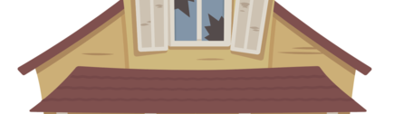
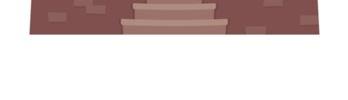
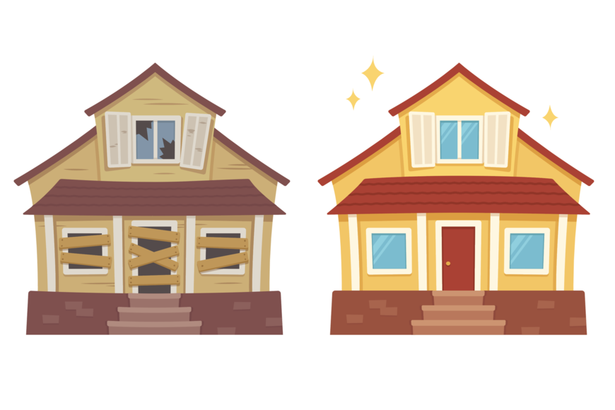

<ion-app>
  <!-- SPLASH -->
  <div id="custom-overlay" [style.display]="splash ? 'flex': 'none'">
   <div class="flb">
     <!--  -->
     
     
     
     
     <h1>Relevamiento visual</h1>
     <h2>Haedo Jonathan PPS2020</h2>
     
    </div>
 </div>
 <!-- END Splash -->

<ion-router-outlet></ion-router-outlet>

</ion-app>
